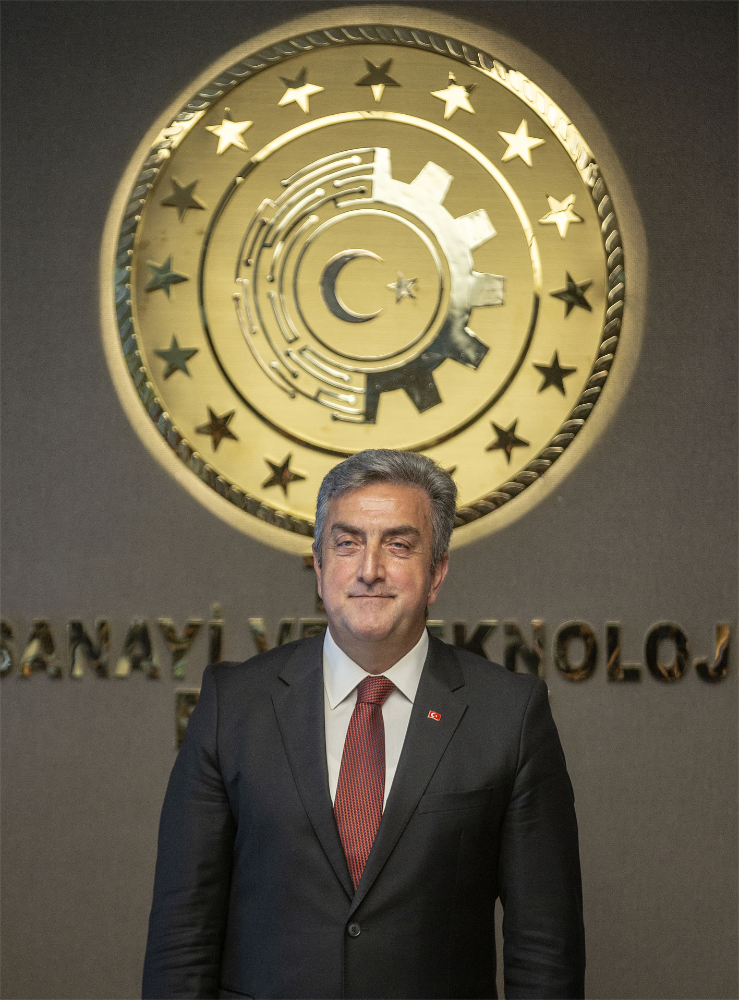
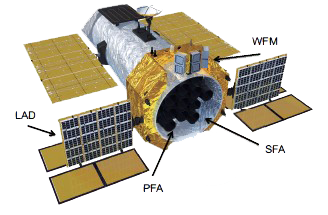
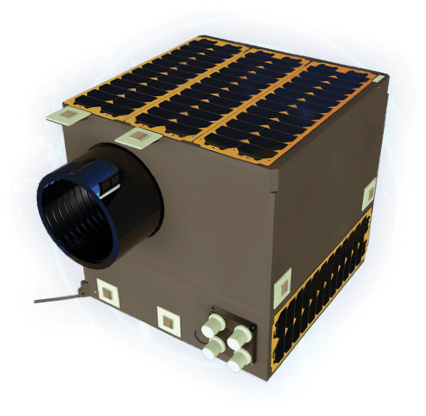
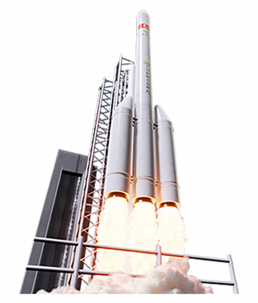

Misyon
Yeni Uzay Çağının gereklerine uygun şekilde, ülkemizin ve tüm insanlığın menfaatine olacak çalışmaları gerçekleştiren öncü ve lider kurum olmak.
Millî Uzay Programı; önümüzdeki 10 yılı kapsayacak şekilde, ülkemizin uzay politikaları alanındaki vizyonu, stratejileri, hedefleri ve projelerini içermektedir.

Serdar Hüseyin Yıldırım
Yönetim Kurulu ve Ajans Başkanı
PROJELER

eXTP
“Artırılmış X-Işını Zamanlama ve Polarimetri”(eXTP), evrendeki en ilginç ve en şiddetli parlamaları yapan gökcisimlerini (kara delikler, nötron yıldızları, gama ışını patlamaları) tespit edebilen, dev gözlem aletleri ile bu gökcisimlerinin fiziğini hem tayfsal, hem zamansal ve aynı zamanda polarimetrik olarak araştırabilen bir X-Işını Uydusu projesidir.

LAGARİ
STM tarafından geliştirilmekte olan bir mikro uzaktan algılama uydusudur. LAGARI; güvenlik, genel haritalama, orman ve bitki örtüsünün takibi, tarım alanlarının incelenmesi, afet takibi gibi amaçlara yönelik olarak görev yapacak bir takım uydu sisteminin ilk uydusudur.

MUFS
Savunma Sanayii Başkanlığ ile Roketsan arasında 2018 yılında imzalanan Mikro Uydu Fırlatma Sistemi (MUFS) Geliştirme Projesinde, 100 kilograma kadar kütleli mikro uyduların, yüksekliği en az 400 kilometre olan Alçak Dünya Yörüngesine yerleştirme kabiliyetinin kazanılması amaçlanmaktadır.